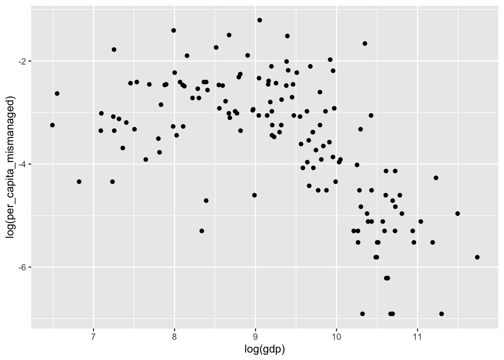

library(readr)
library(dplyr)
library(ggplot2)Warning: package 'ggplot2' was built under R version 4.2.2plastic <- read_csv("data-plastic.csv")In this assignment we will visualize some of the data that was published here as part of the Tidy Tuesday project. There is one observation for each country of the world, and several interesting variables. One of them is the amount of mismanaged plastic waste in each country in a given year, and we will here build a plot using this data by adding more and more layers of complexity.
Download the data here, and load it into memory:
Warning: package 'ggplot2' was built under R version 4.2.2The warning message just says that the first column name is empty in the csv-file (confirm that by looking at the file if you wish), and that it has been given the generic name X1.
We would like to visualize the association between the GDP and the amount of mismanaged plastic waste in the countries of the world. Below you will find four figures of increasing complexity. Replicate them as best as you can, and feel free to spend a few minutes looking at and interpreting the graphs.

ggplot2